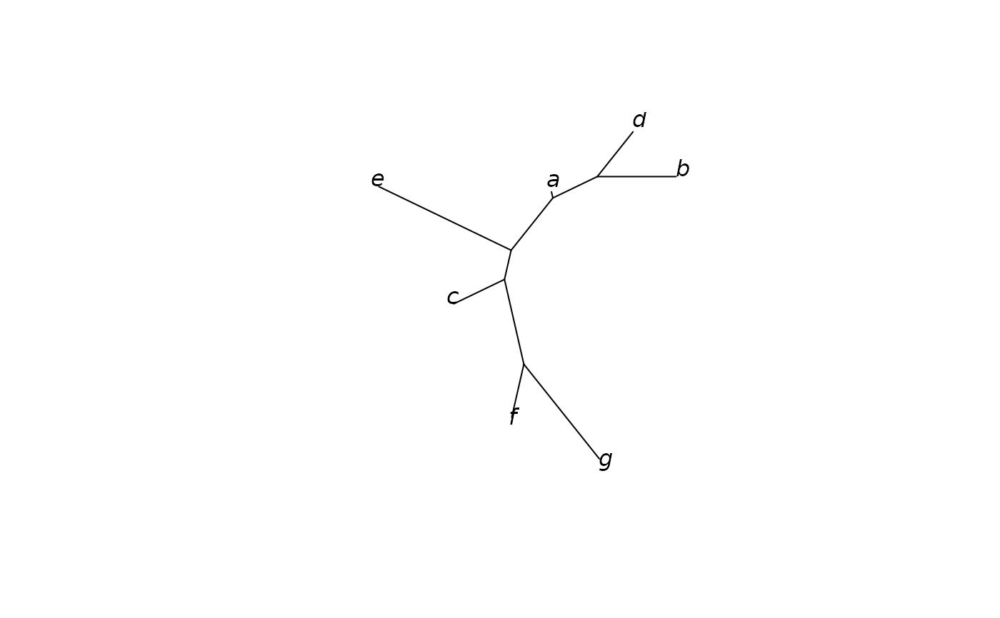

Compute the Genetic Distances between individuals of a gen_tibble object
Source: R/pairwise_dist.R
pairwise_dist.RdThis function computes the genetic distance between each pair of
individuals, as ngsDist (Vieira et al. 2016) does from genotypes: at each
locus genotyped in both individuals, a score of their two genotypes, 0 for
the same genotype, 0.5 for a homozygote and a heterozygote, and 1 for
opposite homozygotes, averaged over the loci, then corrected for
saturation (by default \(-\log(1 - d)\), ngsDist's
default). The distances can be used to build trees, e.g. neighbour-joining
trees with the package ape (see the examples).
Usage
pairwise_dist(x, ...)
# S3 method for class 'tbl_df'
pairwise_dist(x, as_matrix = FALSE, ...)
# S3 method for class 'vctrs_bigSNP'
pairwise_dist(
x,
as_matrix = FALSE,
score = c("genotype", "nucleotide"),
correction = c("log", "none", "jc"),
block_size = bigstatsr::block_size(length(x)),
n_cores = bigstatsr::nb_cores(),
...
)Arguments
- x
a
gen_tibbleobject, or a vector of classvctrs_bigSNP(thegenotypescolumn of agen_tibble, whose individuals are then labelled with the names of the vector).- ...
other arguments passed to specific methods, currently unused.
- as_matrix
boolean, determining whether the results should be a square symmetrical matrix (TRUE), or a tidied tibble (FALSE, the default)
- score
the scores of the pairs of genotypes: "genotype" (the default), 0 for the same genotype, 0.5 for a homozygote and a heterozygote, 1 for opposite homozygotes; or "nucleotide", the same but 0.5 for two heterozygotes (ngsDist's
--avg_nuc_dist).- correction
the correction of the distances d for saturation (ngsDist's
--evol_model; see "The distance and its corrections"): "log" (the default), \(-\log(1 - d)\); "none", d itself (the p-distance); or "jc", Jukes and Cantor's \(-3/4 \log(1 - 4d/3)\), for d a divergence per nucleotide (NAfor d of at least 0.75, with a warning).- block_size
maximum number of loci read at once. Genotypes are compared in a compact bit-packed form, so this has little effect on memory use.
- n_cores
number of cores to be used, it defaults to
bigstatsr::nb_cores()
Value
a tidy tibble with one row per pair of individuals (columns
item1, item2, value, the distance, and n_loci, the number of loci
genotyped in both), or, with as_matrix = TRUE, a square matrix of the
distances (0 on the diagonal) with the numbers of loci of each pair as
attribute n_loci. Pairs without any locus genotyped in both have NA
distances.
Details
Imputed genotypes are used if x is set to use them (see
gt_set_imputed()), and treated as missing otherwise.
pairwise_dist() is an S3 generic. The method for a gen_tibble
computes the matrix with the method for its genotypes column (of class
vctrs_bigSNP), and labels it with the id of the individuals; grouping
is ignored. Other packages can add methods for their own classes of
genotypes (e.g. genotype likelihoods).
The distance and its corrections
With the default score = "genotype", the uncorrected distance d of a
pair is the proportion of their alleles that are not shared identical by
state (at each locus, 0, 1 or 2 of their 2 alleles differ): \(1 - d\) is the proportion of pairwise_ibs(). With score = "nucleotide"
(ngsDist's --avg_nuc_dist), two heterozygotes also score 0.5, and d is
the probability that an allele drawn at random from each individual
differs: \(1 - d\) is the allele sharing of
pairwise_allele_sharing() (whose diagonal, the allele sharing of an
individual with itself, is not 1: the distance of an individual to itself
is 0 here, as in ngsDist).
A proportion is bounded (at most 1), so it saturates: the more two individuals have diverged, the less each further change adds to it. Tree-building methods such as neighbour joining and minimum evolution assume that distances are additive (the distance between two individuals is the sum of the lengths of the branches that join them), and a saturated distance makes the long paths, and so the deep branches, too short. The corrections stretch the large distances. All three have the form \(-b \log(1 - d / b)\), where b is the ceiling that d would reach between individuals that have diverged without limit:
"log" (the default, ngsDist's): b = 1, \(-\log(1 - d)\), minus the logarithm of the proportion of alleles shared. The logarithm turns a similarity that falls by the same factor in each generation into a distance that grows linearly with time; it is the transformation of Reynolds et al.'s (1983) coancestry distance \(-\log(1 - \theta)\), which grows linearly with the generations since two populations split (divided by twice their size) when drift alone acts in populations of constant size. ngsDist's code gives this reason: distances additive under a constant population size, as neighbour joining and minimum evolution assume. For the alleles shared by two individuals it is a heuristic, not derived from a model of mutation: it only assumes that the alleles shared would fall to none with unlimited divergence.
"jc": b = 3/4, Jukes and Cantor's (1969) correction for nucleotide sequences, where any base is equally likely to replace any other, so that unrelated sequences differ at 3/4 of their sites. It fits d as a divergence per nucleotide, over all the positions sequenced; on polymorphic loci alone, each with two alleles, its ceiling has no meaning, and d can reach 0.75 (
NA, with a warning)."none": d itself (the p-distance; b infinite), the easiest to interpret.
For small d the three agree: \(-b \log(1 - d / b) \approx d + d^2 /
(2b)\), so the log correction
increases a small d by a fraction of about d / 2, and a large d by more:
to 0.105 for d = 0.1 (5% more), 0.357 for d = 0.3 (19%), 0.693 for d = 0.5
(39%), and to infinity for d = 1 (opposite homozygotes at every locus;
Inf, with a warning). The corrections keep the order of the distances,
so heatmaps look alike and the nearest individuals stay the nearest; they
change the lengths of the branches of trees and, where distances are
large, can change their topology.
References
Vieira, F. G., Lassalle, F., Korneliussen, T. S., Fumagalli, M. (2016). Improving the estimation of genetic distances from next-generation sequencing data. Biological Journal of the Linnean Society, 117(1), 139-149.
Reynolds, J., Weir, B. S., Cockerham, C. C. (1983). Estimation of the coancestry coefficient: basis for a short-term genetic distance. Genetics, 105(3), 767-779.
Jukes, T. H., Cantor, C. R. (1969). Evolution of protein molecules. In H. N. Munro (Ed.), Mammalian Protein Metabolism (pp. 21-132). Academic Press.
Examples
example_gt <- load_example_gt("gen_tbl")
# the distances, log corrected
pairwise_dist(example_gt)
#> # A tibble: 21 × 4
#> item1 item2 value n_loci
#> <chr> <chr> <dbl> <dbl>
#> 1 a b 0.223 5
#> 2 a c 0.357 5
#> 3 a d 0.182 6
#> 4 a e 0.288 6
#> 5 a f 0.511 5
#> 6 a g 0.357 5
#> 7 b c 0.288 4
#> 8 b d 0.223 5
#> 9 b e 0.693 5
#> 10 b f 0.693 4
#> # ℹ 11 more rows
# the average nucleotide distance, uncorrected
pairwise_dist(example_gt, score = "nucleotide", correction = "none")
#> # A tibble: 21 × 4
#> item1 item2 value n_loci
#> <chr> <chr> <dbl> <dbl>
#> 1 a b 0.3 5
#> 2 a c 0.4 5
#> 3 a d 0.333 6
#> 4 a e 0.417 6
#> 5 a f 0.4 5
#> 6 a g 0.5 5
#> 7 b c 0.25 4
#> 8 b d 0.2 5
#> 9 b e 0.5 5
#> 10 b f 0.5 4
#> # ℹ 11 more rows
# a neighbour-joining tree
dist_matrix <- pairwise_dist(example_gt, as_matrix = TRUE)
if (requireNamespace("ape", quietly = TRUE)) {
tree <- ape::nj(stats::as.dist(dist_matrix))
plot(tree, type = "unrooted")
}
